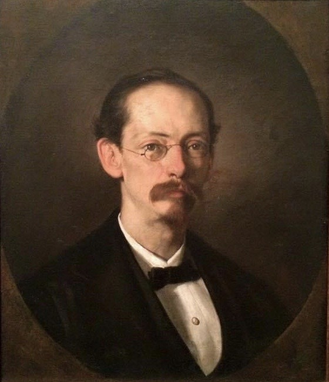
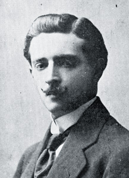
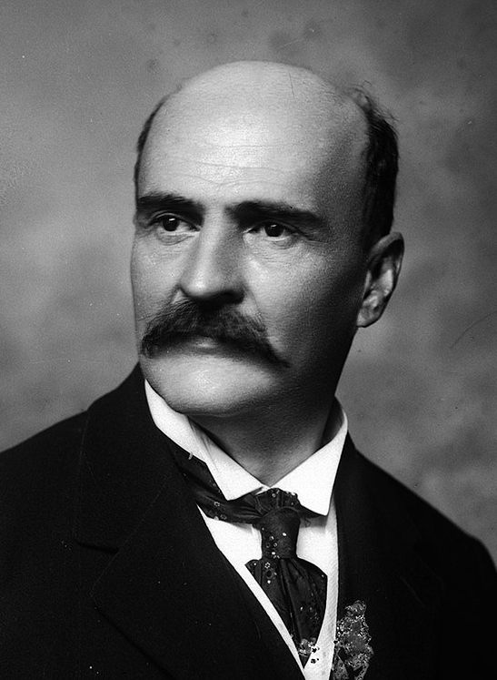

03 Personajes
Los seres que habitan este mundo — cada detalle importa
Yaguará
La protagonista — Prioridad 1 — Tres etapas de vida
Yaguará crece a lo largo del juego. NO es un diseño fijo — tiene tres etapas de vida distintas mapeadas a las bandas del MCER. Cada etapa debe ser visualmente reconocible de un vistazo, incluso en tamaño miniatura.
| Atributo |
Etapa 1: Soñadora (banda A, dest1–18) |
Etapa 2: Caminante (banda B, dest19–38) |
Etapa 3: Guardiana (banda C, dest39–58) |
| Complexión |
Pequeña, patas y orejas desproporcionadamente grandes — una cachorra que aún crece |
Esbelta, atlética, rápida — una adulta joven en su plenitud |
Hombros poderosos, movimiento deliberado — nada desperdiciado |
| Pelaje |
Dorado claro con rosetas tenues, aún formándose |
Dorado oscuro con rosetas nítidas y bien definidas |
Dorado ámbar profundo, rosetas densas, hocico canoso |
| Ojos |
Grandes, verde brillante con destellos ámbar — todo es nuevo |
Verde ámbar equilibrado, enfocados — sabe lo que busca |
Ámbar dominante, hundidos, serenos — ya lo ha visto todo |
| Marca de constelación |
Marca de nacimiento tenue en el hombro izquierdo — apenas visible |
Patrón claro, brillo suave ocasional |
Luminosa, pulsa con luz en momentos clave |
| Cicatrices / marcas |
Ninguna |
Rasguño fino en el costado (adquirido en dest29) |
Múltiples cicatrices desvanecidas + cicatriz en el puente de la nariz (espejo de Mamá Jaguar) |
Compartido en todas las etapas: Espíritu-jaguar femenino (Panthera onca). NO anaranjado como un tigre — estudiar jaguares reales. Los ojos son siempre el rasgo más importante — llevan toda la historia.
Etapa 1: Soñadora — Expresiones (6)
- Curiosa — orejas hacia adelante, ojos enormes, cabeza ladeada
- Sobresaltada — orejas abiertas, cuerpo tenso, ojos muy abiertos
- Tímida — medio escondida detrás del follaje, un ojo visible
- Encantada — postura saltarina, ojos brillando
- Escuchando — completamente quieta, orejas giradas, ojos entrecerrados
- Confundida — cabeza ladeada, una pata levantada
Etapa 1: Soñadora — Poses (5)
- Sentada junto al río — pequeña contra raíces grandes, mirando hacia arriba
- Cazando luciérnagas — juguetona, a medio salto
- Acurrucada contra Mamá Jaguar — durmiendo, segura
- Asomada al agua — viendo su reflejo por primera vez
- Mirando hacia la ceiba — cuello estirado, marca de constelación apenas visible
Etapa 2: Caminante — Expresiones (6)
- Decidida — ojos enfocados, mandíbula firme, cuerpo bajo
- Cautelosa — orejas ligeramente hacia atrás, ojos escaneando
- Alegre — ojos brillantes, postura relajada, casi sonriendo
- Feroz — mostrando levemente los dientes, postura protectora
- Pensativa — mirando a la distancia media, orejas neutras
- Hablando — boca ligeramente abierta, ojos conectando con el espectador
Etapa 2: Caminante — Poses (5)
- Caminando por el bosque — a medio paso, con confianza
- Saltando — sobre el agua o entre rocas, extensión completa
- De pie en una cresta — viento en el pelaje, observando el paisaje
- Agachada — lista para saltar, músculos tensos
- Sentada con Candelaria — una al lado de la otra, compañeras iguales
Etapa 3: Guardiana — Expresiones (6)
- Serena — ojos entrecerrados, quietud absoluta
- Imponente — mentón alzado, constelación brillando
- Dolor — ojos hacia abajo, peso de la pérdida visible
- Enseñando — mirada paciente, cabeza ligeramente inclinada hacia quien escucha
- Recordando — ojos distantes, viendo algo que ya no está
- Resuelta — mirando al frente, cada cicatriz visible, sin miedo
Etapa 3: Guardiana — Poses (5)
- Sentada en reposo — bajo la ceiba, constelación pulsando
- Caminando lentamente — deliberada, cargada de propósito
- Mirando las estrellas — cabeza inclinada hacia atrás, constelación completa brillando en su hombro
- De pie en un umbral — entre dos mundos, mitad en luz, mitad en sombra
- Nariz contra nariz con La Sombra — abrazando su yo-sombra
Entregable: TRES hojas de personaje (una por etapa, cada una con rotación + expresiones + poses como PNG separados con fondos transparentes) + 2 ilustraciones de transición (Soñadora → Caminante en dest18, Caminante → Guardiana en dest38)
Mamá Jaguar (Nakawe)
La madre — Prioridad 2
- Apariencia: Más grande que Yaguará, pelaje más oscuro. Ojos dorados serenos.
- Marca distintiva: Una cicatriz que cruza el puente de su nariz — de viejos viajes de los que no habla.
- Personalidad: Estable, cálida, antigua sin ser vieja. Digna y firme.
- Líneas de diálogo (referencia de tono): "El río no espera." / "Los nombres no se pierden. Se olvidan."
Poses necesarias
- Sentada con majestuosidad — cerca del río, vigilando su territorio
- Acariciando a Yaguará — un momento tierno de despedida
- Mirando hacia el horizonte — de espaldas al espectador, el peso de lo que sabe
Expresiones: serena, orgullosa, preocupada
Entregable: 3 poses + 3 expresiones, PNG transparente
Río
El hermano menor — Picardía / Corazón — Prioridad 2
- Apariencia: Más pequeño que Yaguará, pelaje más claro, ojos grandes y juguetones.
- Lleva el nombre del río porque nunca deja de moverse.
- Cualidad clave: Incluso su pose de "quieto" debe sentirse cinética — cola moviéndose, pata a medio alcanzar, peso cambiando.
- Rol en la historia: Alivio cómico en A1, fuente de preocupación en B1 (¿sigue a Yaguará?), héroe sorpresa en C1.
Poses necesarias
- A medio salto — pura alegría, persiguiendo una mariposa o luciérnaga
- Tropezando — cayéndose por sus propias patas, juguetón
- Escondiéndose detrás de Yaguará — solo ojos y orejas visibles, espiando
- Durmiendo acurrucado — el único momento en que está quieto, cola sobre la nariz
Entregable: 4 poses, PNG transparente
Abuela Ceiba
La mentora — No es un jaguar — Prioridad 2
- Qué es: Un enorme árbol de ceiba (ceiba) en el centro del bosque. Habla, pero lentamente.
- Referencia visual: Buscar árboles reales de Ceiba pentandra — enormes raíces tabulares, copa ancha, epífitas cubriendo el tronco.
- Rostro: Sutilmente visible en la corteza — NO una cara de caricatura. Más bien pareidolia — se ve si buscas, pero podría ser solo el patrón de la corteza.
- Copa: Luciérnagas reunidas alrededor de sus ramas superiores, creando un brillo suave.
- Raíces: Se extienden hacia afuera como ríos o venas, conectándose con todo.
- Ella conoce todos los nombres porque todas las raíces pasan por ella.
Versiones necesarias
- Versión de día: Luz verde cálida filtrándose por el dosel, musgo y helechos en el tronco
- Versión de noche: Luciérnagas brillando, luz de luna, místico pero no tenebroso
Entregable: 2 versiones (día/noche), PNG transparente + versiones de escena completa con fondo
Colibrí (Zunzún)
Guía de la selva — Aliado — Prioridad 5
- Especie: Espíritu colibrí. Plumaje iridiscente verde-azul.
- Escala: Imposiblemente pequeño. Enfatizar el contraste con Yaguará — podría posarse en su oreja.
- Efecto especial: Estelas de partículas luminosas al volar, como pequeñas estrellas cayendo de las puntas de las alas.
- Personalidad: Habla rápido, conoce el nombre de cada flor. Enseña que las cosas pequeñas tienen gran poder.
Poses necesarias
- Suspendido en el aire — alas borrosas, mirando al espectador
- Acelerando — estela de vuelo a media carrera con rastro de luz
- Posado en la oreja de Yaguará — susurrando
- Alas extendidas — mostrando toda la iridiscencia, como una joya
Entregable: 4 poses, PNG transparente + versión simplificada en SVG para la interfaz
Cóndor Viejo
Guía de los Andes — Aliado — Prioridad 5
- Especie: Cóndor andino (Vultur gryphus). Antiguo, envergadura enorme.
- Detalles: Collar blanco, plumas desgastadas que muestran la edad, un ojo ligeramente nublado (el izquierdo).
- Personalidad: Habla rara vez. Ve todo desde arriba. Enseña la perspectiva.
Poses necesarias
- Planeando — visto desde abajo, las alas llenan el encuadre, montañas detrás
- Posado en una roca — en un saliente alto de montaña, el viento agitando las plumas
- Cabeza girada mirando hacia abajo — un ojo claro, uno nublado, sabio y paciente
Entregable: 3 poses, PNG transparente
Delfín Rosado (Boto)
Guía de los llanos / Río — Aliado — Prioridad 5
- Especie: Delfín rosado del Amazonas (Inia geoffrensis). Buscar fotos reales — son extraños y hermosos.
- Color: Rosa pálido, casi translúcido en algunas partes. Más claro en el vientre.
- Cualidad clave: Siempre medio sumergido — nunca se ve el delfín completo. "Sonrisa" enigmática (su boca naturalmente se curva hacia arriba).
- Nota folclórica: Cambiaformas en el folclor colombiano/amazónico. Juguetón pero poco confiable. Enseña que no todas las palabras significan lo que dicen.
Poses necesarias
- Emergiendo — saliendo del agua turbia del río, rosa contra agua marrón
- Asomando sobre el agua — solo ojos y parte superior de la cabeza visibles, observando
- Nadando junto a una canoa — visto desde arriba, sombra bajo la superficie
Entregable: 3 poses, PNG transparente
Tortuga Marina (Carey)
Guía de la costa — Aliada — Prioridad 5
- Especie: Tortuga carey (Eretmochelys imbricata). Antigua.
- Caparazón: Tiene percebes, pequeños crecimientos de coral, tal vez una pequeña anémona — lleva un ecosistema en su espalda.
- Movimientos: Lentos y deliberados. Cada gesto es intencional.
- Personalidad: Ha cruzado todos los océanos. Recuerda todo. Enseña la paciencia — algunas historias toman toda una vida en contarse.
Poses necesarias
- Nadando en mar abierto — agua turquesa, luz filtrándose desde arriba
- Descansando en la arena — en una playa caribeña de noche, luz de luna en el caparazón
- Cabeza emergiendo del caparazón — mirando directamente al espectador con ojos ancestrales
Entregable: 3 poses, PNG transparente
El Silencio Gris
El antagonista — Una fuerza, no un personaje — Prioridad 7
- NO es un personaje con cuerpo. Es una atmósfera, una condición, una ausencia.
- Concepto visual: Niebla gris / estática / ruido visual que borra el color por donde pasa.
- Pensar en: Una fotografía que lentamente pierde su saturación desde un borde. Un paisaje donde el lado izquierdo es vívido y el lado derecho se disuelve en gris.
- No es malvado. No es un villano. Simplemente la ausencia de nombrar. Natural, como la entropía.
- Equivalente sonoro: La sensación de una palabra en la punta de la lengua que no logras recordar.
Entregable: Texturas superpuestas y efectos de borde — PNG con transparencia, varios tamaños, sin costuras donde sea posible
La Sombra de Yaguará
El yo-sombra — Prioridad 7
- Aparece en el nivel B2. Usa la Etapa 2 (Caminante) como base de su silueta, ya que aparece durante la banda B. Luce exactamente como Yaguará pero algo anda mal.
- Visual: La silueta de Yaguará, pero los bordes oscilan como un reflejo en agua agitada.
- Ojos: Espejos — reflejan al espectador en vez de ver. Sin pupilas, solo superficie reflectante.
- Representa: El miedo a cometer errores, a no ser lo suficientemente bueno para hablar. Debe ser abrazada, no derrotada.
Entregable: Versión silueta oscura de cada pose de Yaguará, con bordes ondulantes — PNG transparente
Los autores literarios — Personajes recurrentes A1–C2, presentes en todo el viaje
Cuatro autores colombianos reales aparecen como presencias mágico-realistas a lo largo de todo el mundo de Yaguará, desde A1 hasta C2. En A1, son figuras oníricas: aparecen, dicen una sola línea, brillan y se disuelven. Para B1+, se convierten en personajes narrativos completos con picos literarios recurrentes. En C1–C2, sus obras se convierten en la cumbre filosófica de cada destino. Los autores crecen con el estudiante a lo largo de los 89 destinos.
Distribución: Pombo (16 apariciones, A1–C2), Rivera (16, A1–C2), Carrasquilla (14, A1–C2), Macías (44, A1–C2 — dominante desde B1+ como «El Maestro», la columna vertebral filosófica del juego).
Regla visual: NO son retratos fotorrealistas. Son estilizados, cálidos, ilustrados con la misma calidad de línea orgánica que los personajes animales — pero inconfundiblemente humanos y reconociblemente basados en la apariencia real de los autores. Piense en las figuras humanas de Shaun Tan o los personajes oníricos de Remedios Varo. Existen entre lo real y lo mítico. Use las fotografías de referencia para el rostro, la complexión y el porte.
El poeta — Rafael Pombo (1833–1912)
Poeta de la literatura infantil colombiana — Dominio público — Prioridad 3

- Apariencia real (ver
assets/reference/rafael-pombo.jpg): Rostro delgado, frente alta, cabello castaño escaso. Pequeños quevedos redondos (pince-nez). Bigote castaño/rojizo cuidado, sin barba. Tez pálida. Traje oscuro formal, camisa blanca, corbatín negro con alfiler de perla. Expresión seria y reflexiva, pero los ojos son amables detrás de los lentes. Porte refinado, de intelectual.
- Tema: Nombrar, animales, lo lúdico. Su mundo ES el bosque de Yaguará.
- Contexto: Sentado o de pie en un claro del bosque, rodeado de animales de sus poemas. Una rana (Rinrín) en su hombro o saltando de su libro abierto. Doña Ratona puede aparecer cerca.
- Ropa: Traje oscuro formal con cuello alto, corbatín — vestimenta de intelectual bogotano del siglo XIX. Ligeramente arrugado, vivido. Manchas de tinta en los dedos.
- Luz: Dorada, cálida — como si el bosque se abriera para dejar pasar la luz del sol hasta él.
- Accesorios: Un libro abierto del que emergen animales; una pluma; un tintero.
- Momento clave: “El poeta sonríe. Una rana salta de su libro.”
Expresiones necesarias (4)
- Sonriendo cálidamente — amabilidad genuina, paternal
- Leyendo en voz alta — boca abierta, ojos en el libro, gesto de declamación
- Mirando hacia arriba con asombro — al dosel del bosque
- Riendo — risa abierta, los lentes ligeramente torcidos
Poses necesarias (3)
- Sentado con libro abierto en el regazo — rana a media salto desde las páginas
- De pie en un claro con brazos ligeramente abiertos — acogiendo el bosque
- Inclinándose para hablar a un animal pequeño — a la altura de la rana
También ilustrar
- Rinrín — la rana de “El renacuajo paseador”: pequeña, expresiva, cómica, siempre cerca del poeta.
- Doña Ratona — una ratona digna con un pequeño delantal.
Entregable: Hoja de personaje + 3 poses + Rinrín y Doña Ratona como personajes separados, PNG transparente
El viajero — José Eustasio Rivera (1888–1928)
Autor de La vorágine — Dominio público — Prioridad 3

- Apariencia real (ver
assets/reference/jose-eustasio-rivera.jpg): Hombre joven, principios de los 30. Rostro ovalado, cabello oscuro peinado hacia atrás con raya lateral. Afeitado con un insinuación de bigote fino. Piel clara, facciones refinadas. Ojos oscuros mirando ligeramente fuera de cámara — contemplativos, casi melancólicos. Traje de tres piezas con corbata. Postura digna y erguida. Para el juego, adaptar su ropa de traje formal a ropa de campo de la selva, pero mantener el mismo porte digno y su rostro joven y serio.
- Tema: Naturaleza, selva, exploración. La selva misma habla a través de él.
- Contexto: Caminando por la selva densa, cuaderno en mano, escribiendo mientras avanza. La selva lo envuelve. Está en casa allí, sin miedo, pero con respeto.
- Ropa: Adaptar de su look formal a ropa de explorador de principios del siglo XX — camisa de lino (mangas enrolladas), pantalones, botas resistentes, sombrero de ala ancha echado hacia atrás. Morral de cuero cruzado al pecho. Mantener la dignidad de su porte incluso en ropa de selva.
- Accesorios: Un cuaderno de cuero (más pequeño que el de Candelaria), un lápiz corto, el morral.
- Momento clave: “Un viajero camina por la selva. Tiene un cuaderno.”
Expresiones necesarias (4)
- Concentrado — escribiendo mientras camina, ojos en el cuaderno
- Mirando al dosel con asombro — cuello hacia arriba, boca entreabierta
- Decidido — paso firme, mirada al frente
- Contemplativo — de perfil, mirando al horizonte verde
Poses necesarias (3)
- Caminando por la selva con cuaderno — vegetación densa alrededor
- Agachado junto al río escribiendo — agua reflejando su silueta
- Silueta de perfil contra el verde denso — al borde del bosque mirando hacia afuera
Entregable: Hoja de personaje + 3 poses, PNG transparente
Don Tomás — Tomás Carrasquilla (1858–1940)
Maestro del costumbrismo antioqueño — Dominio público — Prioridad 3

- Apariencia real (ver
assets/reference/tomas-carrasquilla.jpg): Calvo en la parte superior, cráneo completamente liso. Bigote ancho, oscuro y frondoso — su rasgo más icónico, grueso y tupido, caído ligeramente hacia abajo. Rostro ancho, mandíbula fuerte. Ojos oscuros hundidos con mirada directa y penetrante — la mirada de un hombre que no se le escapa nada. Traje oscuro formal, camisa blanca de cuello alto, corbata/corbatín oscuro con alfiler. Complexión sólida, robusta. Serio pero no severo — la ironía vive en los ojos y en la forma del bigote.
- Tema: Familia, comida, hogar, vida cotidiana. Historias junto al fuego.
- Contexto: Sentado junto al fuego o en una mesa rústica. Siempre cerca de comida, familia, calor. La escena irradia domesticidad — no pobreza, sino sencillez con dignidad.
- Ropa: Formal pero antioqueño — traje oscuro, cuello alto, chaleco. Una ruana sobre los hombros para el frío. Un sombrero cercano (no puesto cuando está sentado).
- Rostro: El bigote es esencial — grueso, angular, imponente. Ojos que se arrugan con ironía.
- Accesorios: Un plato de comida, una taza de chocolate caliente, un taburete de madera, luz de fogata.
- Momento clave: “Un hombre viejo aparece junto al fuego.”
Expresiones necesarias (4)
- Sonrisa de bienvenida — cálida, hospitalaria, bigote curvándose
- Ofreciendo comida — mano extendida con un plato o taza
- Contando una historia — manos animadas, ojos brillantes
- Escuchando con mirada irónica — ceja levantada, media sonrisa
Poses necesarias (3)
- Sentado junto al fuego con un plato — fogata iluminando su rostro
- De pie en una puerta dando la bienvenida — gesto acogedor
- Manos gesticulando mientras cuenta una historia — sentado, audiencia implícita
Entregable: Hoja de personaje + 3 poses, PNG transparente
El Maestro — Luis Fernando Macías Zuluaga (n. 1957)
El Guía — Poeta, narrador, profesor — Contemporáneo (con licencia) — Prioridad 1
El Maestro es la columna vertebral filosófica de todo el juego. Mientras los otros tres autores son voces literarias recurrentes, Macías es el guía — el profesor que camina junto a Yaguará desde B1 en adelante. Aparece en 44 juegos a lo largo de B1–C2, lo que lo convierte en la presencia humana más frecuente del juego después de Candelaria. Sus obras («La rana sin dientes», «Los animales del cielo», «La canción del barrio») forman la cumbre literaria de cada destino desde el dest19. «Nombrar es crear» — su enseñanza central — es la tesis del juego.
- Apariencia real (ver
assets/reference/luis-fernando-macias.jpg): Finales de los 60. Cabello corto gris/blanco, ligeramente escaso. Gafas rectangulares de montura oscura. Rostro redondo y cálido con líneas de risa — un hombre que sonríe fácil y abiertamente. Barba incipiente canosa. Sonrisa amplia y franca. Camisa a cuadros abotonada, casual y accesible. No impone — amigable, cercano. Complexión robusta.
- Tema: Enseñanza, sabiduría, lenguaje, creación a través del acto de nombrar. “La palabra como ser vivo.”
- Contexto: Aparece junto al río con un libro. Presencia serena. El espacio alrededor de él se siente como un aula que se ha convertido en jardín. A medida que avanza el juego (B2–C2), aparece en contextos más variados: senderos de montaña, claros estrellados, las raíces de la ceiba.
- Ropa: Moderna pero discreta — camisa abotonada limpia, pantalones sencillos. En la banda C, añadir una ruana ligera sobre los hombros (eco de Carrasquilla, pero contemporáneo).
- Accesorios: Un libro (cerrado o abierto), el río detrás de él. En C1+, puede sostener un cuaderno con texto manuscrito visible. Un bolígrafo siempre en el bolsillo de la camisa.
- Momentos clave:
- “Un hombre con lentes aparece junto al río. Tiene un libro.” (A1 — primera aparición)
- “Nombrar es crear. Cuando digas lo que será, lo estarás creando.” (B1 — la enseñanza)
- “La rana sin dientes puede sostener palabras.” (C2 — la revelación)
- Arco narrativo: En A1, aparece brevemente como figura onírica. En B1, se convierte en profesor recurrente — presente pero no dominante. En B2–C1, es un personaje narrativo completo con diálogo, opiniones y profundidad emocional. En C2, es el sabio que se retira para que el estudiante hable.
Expresiones necesarias (6)
- Escuchando con atención — cabeza ligeramente inclinada, gafas reflejando la luz
- Explicando con pasión tranquila — manos abiertas, ojos brillantes
- Sonriendo ante el hallazgo de un estudiante — alegría genuina, líneas de risa profundas
- Leyendo — ojos bajos, absorto, un dedo marcando la página
- Contemplativo — mirando el río, gafas levantadas sobre la frente
- Despedida — cálido pero resuelto, el maestro que libera al estudiante
Poses necesarias (5)
- De pie junto al río con libro — agua corriendo detrás (introducción B1)
- Sentado en una roca leyendo — naturaleza alrededor, paz (recurrente)
- Manos abiertas como ofreciendo una palabra — gesto de entrega (la pose de enseñanza)
- Caminando junto a Yaguará — lado a lado por un sendero del bosque, libro bajo el brazo (B2+)
- De pie bajo la ceiba, mirando hacia arriba — ruana sobre los hombros, luz de constelación en su rostro (final C2)
Entregable: Hoja de personaje (rotación + 6 expresiones + 5 poses) + 1 ilustración de transición mostrando su presencia creciente (figura onírica A1 → personaje completo B1), PNG transparente. Este personaje aparece en 44 juegos — necesita la misma profundidad visual que Yaguará y Candelaria.
Los Antiguos
Los ancestros — Figuras oníricas — Prioridad 9
- Aparecen como: Constelaciones, pinturas rupestres que se mueven, voces en el agua, petroglifos que se animan.
- Estilo visual: Contornos luminosos, patrones de estrellas, arte lineal dorado sobre fondos oscuros.
- Referencia: Petroglifos colombianos (pinturas rupestres de Chiribiquete), figuras de oro precolombino (Museo del Oro).
- Hablan en metáforas y poesía. Nunca dan respuestas directas. Son los maestros finales.
Entregable: 4–6 figuras de constelación/petroglifo, SVG + PNG con efectos de brillo
Candelaria “Cande” Arango
Heraldo / Compañera — Humana — Prioridad 3
Versión 12 años (A2 Avanzado)
- Apariencia: Afrocolombiana / mestiza de Quibdó, Chocó. Piel oscura, trenzas rizadas decoradas con pequeñas semillas y flores silvestres.
- Ropa: Uniforme escolar — blusa blanca, falda azul, ligeramente embarrada del bosque. Botas resistentes, grandes para ella.
- Accesorios: Cuaderno de cuero gastado apretado contra el pecho (páginas sobresaliendo). Bolso de lona colgado de un hombro.
- Personalidad en la pose: Ojos brillantes, curiosa, un poco asustada pero valiente. Lo dibuja todo — su cuaderno se convierte en un mapa en niveles superiores.
Expresiones necesarias (5)
- Asombro — ojos muy abiertos, boca ligeramente abierta
- Concentración — ceño fruncido, lápiz en mano
- Riendo — cabeza hacia atrás, alegría genuina
- Escuchando con atención — cabeza inclinada, mano en la oreja
- Dibujando en el cuaderno — ojos bajos, completamente absorta
Poses necesarias (5)
- De pie alerta — cuaderno contra el pecho, mirando hacia el bosque
- Agachada junto al río — una mano tocando el agua, la otra sosteniendo su cuaderno
- Sentada con piernas cruzadas dibujando — rodeada de plantas, en paz
- Caminando junto a Yaguará — NO montándola — lado a lado, compañeras iguales
- Alcanzando algo — una mano extendida, asombro en su rostro
Versión 18 años (C1–C2)
- Apariencia: Postura segura, más alta. Las mismas trenzas ahora con hilos dorados entretejidos. Gafas redondas de montura fina.
- Ropa: Jeans, botas, un pañuelo colorido (eco de Doña Asunción). Bolso universitario de lona cubierto de parches y pines.
- Accesorios: El mismo cuaderno — ahora grueso, rebosante de dibujos, mapas, hojas prensadas.
Expresiones (4)
- Decidida — mandíbula firme, ojos al frente
- Hablando con pasión — manos gesticulando, ojos brillantes
- Estudiando un documento — gafas ajustadas, concentrada
- Sonriendo a Yaguará — reconocimiento cálido entre viejas amigas
Poses (3)
- De pie en un podio o mesa — presentando con autoridad
- Sosteniendo el cuaderno abierto — mostrando su contenido a alguien
- Caminando por el bosque como adulta — paso seguro, pañuelo al viento
Entregable: Hojas de personaje para ambas edades (rotación + expresiones + poses), PNG transparente
Don Próspero García
Antagonista (guardián del umbral) — Humano — Prioridad 4
- Complexión: Silueta alta y delgada — no físicamente amenazante, intelectualmente imponente. 55–60 años.
- Rostro: Cara curtida que ha visto tanto salas de juntas como caminos rurales. Cabello plateado peinado hacia atrás, ligera entrada. La expresión muestra inteligencia, cansancio y convicción — NO crueldad, NO desprecio.
- Ropa: Cara pero práctica — camisa de lino limpia, pantalones bien cortados, cinturón de cuero, botas pulidas pero polvorientas.
- Accesorios: Portafolio/maletín de cuero con contratos, mapas, documentos.
- Manos: Notablemente limpias y suaves — contraste con las manos trabajadoras de todos los demás.
- Detalle crítico: Un pequeño jaguar tallado en madera en su bolsillo — lo hizo su madre. Nunca lo muestra. Una ilustración debe mostrarlo cayéndose o él sosteniéndolo cuando está solo.
Expresiones necesarias (4)
- Sonrisa persuasiva — cálida, convincente, practicada
- Mirada calculadora — ojos entrecerrados, evaluando
- Tristeza genuina — sin máscara, a solas
- Sorpresa — al ser confrontado con la verdad, la máscara cayendo
Poses necesarias (4)
- De pie con portafolio — formal, silueta imponente
- Gesticulando hacia un mapa o plano — vendiendo su visión
- Sentado solo mirando el jaguar de madera — el único momento en que vemos al hombre real
- Caminando de espaldas — visto desde atrás, disminuyendo en la distancia
Entregable: Hoja de personaje (rotación) + expresiones + poses, PNG transparente
Doña Asunción “La Abuela del Río”
El puente — Humana — Prioridad 4
- Complexión: Figura pequeña — siempre contrastada contra el enorme río/paisaje. 75–80 años.
- Rostro: Piel marrón profundo, rostro profundamente arrugado, expresión de paz y concentración profunda. Cabello blanco bajo un pañuelo colorido (patrones brillantes).
- Manos: Faltan dos dedos en la mano izquierda (accidente con machete en su juventud) — visibles, no ocultos.
- Entorno: Siempre cerca del agua — sentada en la orilla de un río, manos tocando la superficie del agua.
- Ropa: Sencilla, gastada pero limpia. Falda larga, blusa práctica, sin zapatos o sandalias simples.
Expresiones necesarias (4)
- Escuchando — ojos cerrados, manos en el agua, completamente quieta
- Sonrisa sabia — ella ve algo que tú no ves
- Hablando con autoridad — ojos abiertos, voz con peso
- Serena — en paz, cerca del atardecer
Poses necesarias (4)
- Sentada junto al río con las manos en el agua — su imagen definitoria
- De pie pequeña contra el bosque — mostrando la escala, diminuta pero enraizada
- Sosteniendo el rostro de Candelaria entre sus manos — pasando conocimiento entre generaciones
- Silueta de perfil al atardecer — la última escuchadora
Entregable: Hoja de personaje + expresiones + poses, PNG transparente
11 Escenas clave por destino
Momentos narrativos específicos que necesitan ilustración — la columna visual del juego
Cada destino tiene un momento visual central — la imagen que el estudiante ve al llegar. A continuación se presentan las escenas de los 89 destinos, organizadas por nivel. Cada tarjeta describe la composición, personajes, escenario y ambiente.
Entregable por escena: 1200×800px (horizontal) o 800×1200px (vertical), PNG con fondo transparente + archivo fuente. Estas son ilustraciones narrativas, no elementos de interfaz — deben sentirse como páginas de un libro.
A1 Básico — El despertar (dest1–6)
Bosque, familia, nombrar. El mundo es pequeño, cálido, y comienza a deshilacharse en los bordes.
dest1 — “Viajero, abre los ojos”
Escena: Primer despertar — Mundo de Abajo
Amanecer en la selva chocoana. Luz verde-dorada filtrada a través del dosel denso. Yaguará no es completamente visible — solo sus ojos (verde-ámbar) brillan desde las sombras entre las raíces de soporte. El bosque está vivo: helechos desplegándose, un río centelleando abajo, luciérnagas que se apagan con el amanecer. El estudiante ve el bosque antes de ver a la guía.
Elementos visuales clave
- Los ojos de Yaguará brillando suavemente en la sombra — el único punto cálido en la luz verde fría
- Raíces masivas de ceiba en primer plano, creando un marco natural
- Río visible en el plano medio, captando la primera luz
- Una sola rana dorada en una hoja (se callará después — presagio)
Ambiente: asombro, invitación, misterio suave
Yaguará (solo ojos)
El bosque
dest2 — “Los nombres de las cosas”
Escena: Nombrar hace brillar las cosas — Mundo de Abajo
Yaguará ha emergido. Está de pie sobre una raíz cubierta de musgo, pequeña y ágil, nombrando el mundo a su alrededor. Cada cosa que nombra brilla brevemente — un árbol pulsa con luz dorada, el agua centellea, las plumas de un pájaro se avivan. Pero en los bordes del encuadre, las cosas sin nombre se desvanecen a gris. El contraste es sutil pero visible: centro vívido, bordes disolviéndose.
Elementos visuales clave
- Yaguará de perfil, boca ligeramente abierta (hablando), luz dorada emanando de las cosas que nombra
- Gradiente de color vívido (centro) a desaturación (bordes) — primera pista del Silencio Gris
- Objetos nombrados con un aura dorada sutil: árbol, río, rana, flor
- Rosetas claramente visibles en el pelaje de Yaguará — esta es la primera vista completa para el estudiante
Ambiente: descubrimiento, urgencia suave, belleza con fragilidad
Yaguará
dest5 — “Lo que me gusta”
Escena: Río persigue peces — Mundo de Abajo
La orilla del río al mediodía. Río (hermano menor) salta tras un pez plateado, patas salpicando, cola arqueada de alegría. Yaguará está sentada detrás, observando — pero sus orejas están giradas hacia otro lado, escuchando algo que el espectador no puede oír. El silencio crece, pero Río no lo nota. Inocencia y conciencia, lado a lado.
Elementos visuales clave
- Río en medio del salto, gotas de agua atrapando la luz del sol — pura alegría cinética
- Yaguará sentada, cuerpo relajado pero orejas giradas hacia atrás — escucha algo mal
- Pez plateado saltando fuera del encuadre
- Luz cálida, río verde, rocas cubiertas de musgo — un lugar seguro que no seguirá siéndolo
Ambiente: alegría juguetona sobre inquietud silenciosa
Yaguará
Río
dest6 — “Un día en el mundo”
Escena: La rana enmudece — Mundo de Abajo
Mediodía en el bosque. Un solo nenufar sobre agua quieta, donde la rana dorada debería estar. La rana no está — o está presente pero sin color, translúcida, desvaneciéndose. Yaguará se agacha al borde del agua, mirando el lugar vacío. En el fondo lejano, apenas visible: Mamá Jaguar observando desde una rama alta, en silueta.
Elementos visuales clave
- El nenúfar con una ausencia — la forma de la rana fantasmal, translúcida, disolviéndose en gris
- Yaguará agachada, reflejada en el agua quieta — su reflejo más claro que la forma desvaneciéndose de la rana
- Mamá Jaguar en el fondo profundo, pelaje oscuro contra dosel oscuro, ojos brillando dorado
- Quietud perfecta — sin viento, sin ondas, sin sonido
Ambiente: pérdida, primera conciencia, el peso del silencio
Yaguará
Mamá Jaguar (distante)
A1 Avanzado — El hogar (dest7–12)
Familia, hogar, la mentora. El mundo seguro tiene nombre — y dejarlo se vuelve necesario.
dest7 — “Comer juntos”
Escena: Comida familiar junto al río — Mundo de Abajo
Luz dorada de atardecer sobre la orilla del Atrato. Tres jaguares comparten pescado: Mamá Jaguar está erguida, tranquila y vigilante. Río come desordenadamente, escamas de pescado en su nariz. Yaguará está entre ellos — comiendo, pero mirando hacia el río. La primera línea de Mamá Jaguar: “Come. El río da.” Pero hay menos peces que la temporada pasada — solo tres donde debería haber muchos.
Elementos visuales clave
- Tres jaguares en composición triangular — retrato familiar, íntimo
- La cicatriz de Mamá Jaguar cruzando su nariz visible en la luz cálida
- El pelaje más claro de Río, pose juguetona incluso comiendo
- Pocas espinas de pescado sobre las rocas — escasez sutil
- El agua del río reflejando cielo dorado, dosel verde enmarcando desde arriba
Ambiente: calidez, pertenencia, abundancia que se adelgaza silenciosamente
Yaguará
Mamá Jaguar
Río
dest11 — “Todos los verbos del mundo”
Escena: Encuentro con Abuela Ceiba — Mundo de Abajo
La imagen definitoria de A1. Yaguará se acerca a Abuela Ceiba por primera vez. La ceiba es enorme — raíces como ríos extendiéndose por el suelo del bosque, tronco más ancho que una casa, copa perdida en la niebla de arriba. Luciérnagas se agrupan alrededor de sus ramas superiores como estrellas suspendidas. El rostro en la corteza es apenas visible — pareidolia, no caricatura. Yaguará es diminuta en la base, mirando hacia arriba. La escala lo es todo.
Elementos visuales clave
- Contraste extremo de escala — Yaguará pequeña abajo, ceiba llenando todo el encuadre hacia arriba
- Raíces de soporte extendiéndose como ríos, cubiertas de musgo y epífitas
- Luciérnagas creando un brillo ámbar cálido en el dosel superior
- El rostro en la corteza: solo sugerencia — si miras, lo ves; si no miras, es solo patrón de corteza
- Raíces que sutilmente conectan hacia afuera — este árbol toca todo
Ambiente: asombro, humildad, encuentro con sabiduría antigua
Yaguará
Abuela Ceiba
dest12 — “¿Quién soy yo?”
Escena: La palabra-semilla — Culminación A1 — Mundo de Abajo
Yaguará de pie ante Abuela Ceiba, habiéndose presentado completamente. La ceiba le da un regalo — no una semilla física, sino la palabra “Escucha”, que aparece como un brillo dorado viajando desde las raíces a través del tronco hasta las patas de Yaguará. La marca de constelación en su hombro izquierdo pulsa débilmente. Detrás, a una distancia respetuosa, Mamá Jaguar observa — orgullosa, triste, sabiendo que su hija se irá.
Elementos visuales clave
- Energía dorada fluyendo desde las raíces a través de las patas de Yaguará — la palabra entrando en su cuerpo
- El patrón de constelación en su hombro izquierdo empezando a brillar
- Mamá Jaguar en el fondo, ojos reflejando dorado
- Escena nocturna — luciérnagas activas, luz de luna a través del dosel
- La palabra “ESCUCHA” podría ser sutilmente visible en los patrones de raíces (como texto oculto en la corteza)
Ambiente: iniciación, partida, el peso de una misión que comienza
Yaguará
Abuela Ceiba
Mamá Jaguar (distante)
A2 Básico — La llamada (dest13–16)
El mundo cambia. Aparece una niña humana. El idioma se convierte en puente entre especies.
dest14 — “Contar lo que pasó”
Escena: Primer encuentro — Yaguará encuentra a Candelaria — Mundo de Abajo
Una imagen fundamental. Cerca del río Atrato, en un claro con bordes grises. Candelaria (12 años, afrocolombiana, uniforme escolar enlodado) está perdida y asustada, aferrada a su cuaderno. Yaguará emerge del borde del bosque. Se miran — ninguna puede hablar el idioma de la otra. Dos mundos encontrándose en incomprensión mutua y necesidad mutua. La brecha entre ellas es todo el juego.
Elementos visuales clave
- Candelaria y Yaguará frente a frente en un pequeño claro — iguales en el encuadre, ninguna dominante
- Uniforme escolar de Candelaria: blusa blanca, falda azul, enlodado. Botas grandes. Cuaderno sostenido como escudo
- Yaguará baja, cautelosa, una pata adelante — curiosa, no amenazante
- Niebla gris visible detrás de Candelaria (borde del mundo humano) y color desvaneciéndose detrás de Yaguará (borde del bosque)
- Entre ellas: una flor o rana — algo que ambas podrían nombrar, si compartieran un idioma
Ambiente: tensión, esperanza, la brecha insoportable entre saber y decir
Yaguará
Candelaria (12 años)
dest15 — “Lo que necesito, lo que quiero”
Escena: Candelaria dibuja al jaguar — Mundo de Abajo
Candelaria sentada con las piernas cruzadas en el suelo del bosque, cuaderno abierto, dibujando a Yaguará. Yaguará observa, quieta — se ve a sí misma a través de ojos humanos por primera vez. El dibujo en el cuaderno es visible: un boceto de jaguar, simple pero reconocible, con ojos verde-ámbar. A su alrededor, el bosque está tranquilo. Comunicación sin palabras compartidas — a través del arte.
Elementos visuales clave
- El cuaderno de Candelaria abierto — el dibujo del jaguar visible en la página
- Yaguará sentada quieta (raro en ella), observando con curiosidad intensa
- Plantas creciendo cerca alrededor de ellas — el bosque aceptando este momento
- Luz cálida moteada — pausa pacífica en un viaje ansioso
Ambiente: conexión, vulnerabilidad, el arte como primer idioma
Yaguará
Candelaria (12 años)
dest16 — “El cielo cambia”
Escena: Refugio de la tormenta — Mundo de Abajo
Una tormenta ha estallado sobre el bosque. Lluvia, truenos, viento desgarrando el dosel. Candelaria y Yaguará se refugian juntas bajo un árbol enorme caído, apretadas. Ninguna habla. Comparten calor. Más allá del refugio, visible a través de la lluvia: una sección entera del bosque ha perdido todo color — gris, silenciosa, quieta. Candelaria también lo ve. Escribe en su cuaderno: “Aquí no hay sonido.”
Elementos visuales clave
- Árbol caído creando un arco/refugio natural — raíces y musgo formando paredes
- Candelaria y Yaguará apretadas juntas, calor contra lluvia fría
- Lluvia visible como líneas plateadas, viento doblando árboles
- Más allá de la lluvia: bosque desaturado — la niebla gris ha avanzado visiblemente
- Candelaria escribiendo con luz tenue — cuaderno mojándose en los bordes
Ambiente: miedo, solidaridad, la tormenta como umbral
Yaguará
Candelaria (12 años)
El Silencio Gris (fondo)
A2 Avanzado — La partida (dest17–18)
Recordar lo que fue. Cruzar el umbral. Dejar el hogar.
dest17 — “Recordar cómo era el mundo”
Escena: Candelaria llora — Mundo de Abajo
Atardecer junto al Atrato. Yaguará intenta describir cómo era el bosque — el pretérito imperfecto hecho visual. Detrás de ella, una capa dorada translúcida muestra el bosque antiguo: más denso, más ruidoso, lleno de color. Delante: el bosque actual, más delgado, más silencioso. Candelaria llora — reconoce este sentimiento de las historias de su abuela Doña Asunción. Memoria y pérdida, superpuestas.
Elementos visuales clave
- Efecto de doble exposición: el bosque “ahora” (más delgado, más pálido) superpuesto con el bosque “antes” (dorado, denso, vívido)
- Candelaria secándose lágrimas, cuaderno en su regazo — la emoción rompiendo
- Yaguará mirando a Candelaria con preocupación — ella causó este dolor al decir la verdad
- El río reflejando ambas versiones del bosque — el agua como memoria
Ambiente: nostalgia, duelo, el pretérito imperfecto como emoción
Yaguará
Candelaria (12 años)
dest18 — “El mundo completo”
Escena: Cruzar el umbral — Culminación A2 — Mundo de Abajo / borde
La escena de partida. Yaguará de pie al borde del bosque, una pata en la tierra, una pata en el camino. Más allá: el mundo humano — techos distantes, un camino, luz diferente. Candelaria camina a su lado, hombro con hombro. Detrás: Mamá Jaguar conteniendo a Río (que se esfuerza hacia adelante, queriendo seguir). La copa de Abuela Ceiba es visible a lo lejos, luciérnagas brillando. Una vibración de raíz — luz dorada pulsando por el suelo — lleva el mensaje: “Ve. Nombra. Escucha. Vuelve.”
Elementos visuales clave
- Composición de umbral: bosque (izquierda/atrás, verde-dorado) vs. mundo humano (derecha/adelante, más cálido, más estructurado)
- Yaguará y Candelaria lado a lado — NO Candelaria guiando, NO Yaguará guiando — iguales
- La pata de Mamá Jaguar sobre la espalda de Río, conteniéndolo suavemente. Los ojos muy abiertos de Río, queriendo ir
- Luz dorada de raíces pulsando en el suelo bajo las patas de Yaguará
- Copa de ceiba en el fondo lejano, un faro
Ambiente: valentía, despedida, el punto de no retorno
Yaguará
Candelaria (12 años)
Mamá Jaguar
Río
Abuela Ceiba (distante)
B1 Básico — El camino (dest19–23)
El Chocó, los Andes, los Llanos, la Costa. Cuatro aliados, un antagonista. El mundo se expande.
dest19 — “Cruzar el umbral”
Escena: Primer pueblo + Don Próspero aparece — Mundo del Medio / Chocó
Un pueblo chocoano sobre palafitos junto al río. Casas de madera coloridas, música de marimba implícita por puertas abiertas, niños corriendo, puestos de mercado con fruta y pescado. Yaguará está parcialmente oculta detrás de Candelaria (ahora 13–14 años), abrumada por el ruido y el movimiento. Al borde del pueblo, una figura aparte: Don Próspero, alto, delgado, pelo plateado, portafolio de cuero bajo el brazo, hablando con líderes del pueblo. Sonríe. Es encantador. Cita poesía. Colibrí (Zunzún) se lanza sobre la cabeza de Yaguará, dejando partículas luminosas.
Elementos visuales clave
- Casas sobre palafitos, coloridas, de madera — arquitectura chocoana (no genérica tropical)
- Yaguará ligeramente detrás de Candelaria — ella es la abrumada, Candelaria es el puente
- Colibrí lanzándose con estela de luz — imposiblemente pequeño, imposiblemente brillante
- Don Próspero en una zona visual separada — misma escena pero enmarcado aparte, su propia iluminación (más fría, más formal)
- Su portafolio de cuero y manos limpias — contraste con las manos trabajadoras del pueblo
Ambiente: llegada, sobrecarga sensorial, dos historias comenzando a la vez
Yaguará
Candelaria (13–14 años)
Colibrí
Don Próspero
dest20 — “Las historias que escucho”
Escena: Los narradores — Mundo del Medio / Chocó
Un atardecer junto al río. Un viejo pescador en una canoa desgastada cuenta su historia, manos gesticulando ampliamente. Una abuela sentada en un escalón de madera, recordando el mercado de hace cincuenta años. Candelaria escribe furiosamente en su cuaderno, tratando de capturar cada palabra. Yaguará escucha con todo su cuerpo — orejas hacia adelante, ojos entrecerrados. En el fondo profundo: Don Próspero, apenas visible, mostrando planos a hombres que miran al suelo.
Elementos visuales clave
- Luz cálida de fogata o linterna en los rostros de los narradores
- Las manos curtidas del pescador, gestos amplios, canoa en la orilla
- Las páginas del cuaderno de Candelaria llenándose de palabras y bocetos
- Yaguará en pose de “escucha” — completamente quieta, orejas inclinadas hacia adelante
- Don Próspero como sombra de fondo, su plano un rectángulo pálido en la luz de la lámpara
Ambiente: tradición oral, calidez, las historias como resistencia
Yaguará
Candelaria
Ancianos de la comunidad
Don Próspero (fondo)
dest21 — “Subir la montaña”
Escena: La perspectiva del Cóndor Viejo — Mundo del Medio / Andes
Andes altos, sobre las nubes. Paisaje de páramo: frailejones (plantas de roseta verde-plateada), niebla fría, cielo inmenso. Cóndor Viejo planea — visto desde abajo, su envergadura masiva llena el encuadre superior, gorguera blanca captando luz fría, un ojo nublado visible. Debajo de él, lejos en el valle: una línea delgada tallada a través del bosque — el camino de Don Próspero, visto desde arriba. “Lo que parece un camino desde abajo, es una herida desde arriba.” Yaguará y Candelaria son pequeñas en un sendero de montaña, mirando hacia arriba.
Elementos visuales clave
- Composición vertical extrema — cielo y cóndor arriba, montaña abajo, humanos diminutos en el medio
- Frailejones en primer plano — estas plantas extrañas y antiguas definen el páramo
- El camino visible como una cicatriz a través del bosque verde abajo — la perspectiva hace literal la metáfora
- Las plumas curtidas del Cóndor, ojo izquierdo nublado — sabiduría antigua en cada detalle
- Nubes debajo del espectador — estamos en territorio del cóndor
Ambiente: inmensidad, claridad, el poder de la perspectiva
Cóndor Viejo
Yaguará (pequeña)
Candelaria (pequeña)
dest22 — “El llano infinito”
Escena: El Delfín Rosado emerge — Mundo del Medio / Llanos
El Orinoco al atardecer. Vasto pastizal dorado extendiéndose hasta el horizonte, cielo enorme (dos tercios de la imagen), palmas de moriche dispersas en silueta. El río corta la llanura, marrón y ancho. Delfín Rosado emerge — rosa pálido contra agua marrón, esa curva enigmática de la boca. Medio sumergido, medio revelado, igual que su enseñanza sobre el doble sentido. Yaguará agachada al borde del agua, expuesta — sin dosel, sin dónde esconderse.
Elementos visuales clave
- Cielo enorme — atardecer dorado-naranja, la sensación llanera de exposición total
- Delfín medio visible — cuerpo rosa pálido bajo agua marrón, solo parte superior de la cabeza y “sonrisa” sobre la superficie
- Palmas de moriche como acentos verticales contra pastizal horizontal
- Espejismo de calor en el horizonte — el borde del mundo se difumina
- Yaguará luce pequeña y vulnerable — criatura del bosque en campo abierto
Ambiente: exposición, ambigüedad, belleza que podría ser un engaño
Delfín Rosado
Yaguará
dest23 — “La costa y la paciencia”
Escena: Tortuga Marina emerge — Mundo del Medio / Costa
Costa caribeña. Agua turquesa, coral visible bajo la superficie, pequeños botes de pesca coloridos sobre arena blanca. Tortuga Marina (Carey) emerge del mar, antigua y enorme — su caparazón cubierto de percebes, pequeños crecimientos de coral, una pequeña anémona. Se mueve con deliberación absoluta. Candelaria (ahora 14 años) de pie en aguas poco profundas, borde de la falda mojado, cuaderno sostenido sobre el agua. Yaguará en la arena, patas apenas tocando la espuma — su primer encuentro con el mar.
Elementos visuales clave
- Color caribeño saturado — turquesa, blanco, rosa coral, azul profundo
- El caparazón de Carey como ecosistema vivo — percebes, coral, anémona, peces diminutos
- Candelaria creciendo — más alta, más segura, protegiendo su cuaderno del agua
- La primera reacción de Yaguará al oleaje — cautelosa, fascinada, una pata probando la ola
- Botes de pesca (pequeños, de madera, coloridos) dando contexto humano a la costa
Ambiente: paciencia, tiempo antiguo, el mar como maestro
Tortuga Marina
Candelaria (14 años)
Yaguará
B1 Avanzado — Las historias (dest24–28)
Caminos que se cruzan, conflicto creciente, despedida de la anciana.
dest24 — “Las historias que se cruzan”
Escena: Dos caminos se encuentran — Mundo del Medio
Una encrucijada en el bosque. Yaguará llega por un sendero, Candelaria por otro. Doña Asunción al fondo junto al río, pequeña contra el paisaje, manos en el agua. Los caminos convergen aquí.
Ambiente: convergencia, destino, dos viajes haciéndose uno
YaguaráCandelariaDoña Asunción (fondo)
dest25 — “El hombre del camino”
Escena: La visión de Don Próspero — Mundo del Medio
Don Próspero de pie en una colina, silueta contra el cielo, mapa extendido en las manos. Postura segura, persuasiva. Abajo, Yaguará y Candelaria observan desde el borde del bosque. Detrás de él: un camino abriéndose paso por el verde.
Ambiente: ambición, persuasión, la lógica seductora del progreso
Don PrósperoYaguaráCandelaria
dest26 — “Lo que se pierde”
Escena: El claro silencioso — Mundo del Medio
Un claro donde había un río. Tierra seca y agrietada, troncos caídos. Una niebla gris en los bordes — primera presencia visible del Silencio Gris. Sin animales. Yaguará sola en el centro, orejas aplastadas.
Ambiente: pérdida, desolación, la ausencia hecha visible
Yaguará
dest27 — “Dos verdades”
Escena: Perspectiva dividida — Mundo del Medio
El mismo paisaje dividido por la mitad. Izquierda: la visión de Don Próspero — camino, trabajadores, pueblo próspero. Derecha: la verdad de Candelaria — bosque destruido, río desviado, animales huyendo. Ambos de espaldas en la línea divisoria.
Ambiente: tensión, verdad dividida, imposibilidad de respuestas simples
Don PrósperoCandelaria
dest28 — “La voz de la abuela”
Escena: Despedida de Doña Asunción — Mundo del Medio
Orilla del río en hora dorada. Doña Asunción sentada en el suelo, pequeña y antigua, pañuelo colorido. Manos en el agua del río. Los dos dedos faltantes de su mano izquierda son visibles. Candelaria arrodillada a su lado, escuchando. La última vez que la anciana habla.
Ambiente: ternura, transmisión, despedida sin drama
Doña AsunciónCandelaria
B2 Básico — El silencio (dest29–33)
El mundo perdiendo color, sombras, conversaciones difíciles, nombres olvidados.
dest29 — “El silencio avanza”
Escena: La niebla gris consume el bosque — Mundo del Medio
El bosque perdiendo color. Árboles grises desde los bordes. Río silencioso. El Silencio Gris avanza como niebla visible. Cóndor Viejo en una rama desnuda, plumas opacas. Colibrí revolotea frenéticamente con luz más tenue.
Ambiente: amenaza creciente, belleza que se apaga
Cóndor ViejoColibrí
dest30 — “La sombra de Yaguará”
Escena: Yaguará enfrenta su sombra — Mundo del Medio
Yaguará frente a su propia sombra distorsionada — como un reflejo en agua turbulenta. Los bordes de la sombra ondulan. Sus ojos son espejos. Luz ámbar-gris. Sin otros personajes.
Ambiente: confrontación consigo misma, miedo hecho visible
YaguaráLa Sombra
dest31 — “Hablar con los demás”
Escena: La plaza llena — Mundo del Medio
Plaza de pueblo llena de gente diversa conversando. Mercado, gestos, desacuerdos, risas. Yaguará entre la multitud, pequeña entre humanos.
Ambiente: complejidad humana, diálogo, el ruido de la democracia
YaguaráComunidad
dest32 — “¿Quién traicionó a quién?”
Escena: Dos perspectivas — Mundo del Medio
El mismo paisaje pintado dos veces en un cuadro: mitad próspera, mitad dañada. Don Próspero y Candelaria de espaldas en el centro. Ilusión óptica pintada.
Ambiente: ambigüedad moral, la perspectiva como única verdad
Don PrósperoCandelaria
dest33 — “El lugar donde van los nombres”
Escena: Cementerio de palabras — Mundo del Medio
Un bosquecillo con lápidas de piedra cubiertas de musgo. Letras talladas — palabras y nombres en idiomas que nadie habla. Algunas piedras brillan tenuemente. Yaguará camina entre ellas, leyendo. Sagrado, no triste.
Ambiente: reverencia, arqueología del lenguaje, belleza quieta
Yaguará
B2 Avanzado — La memoria (dest34–38)
El río de la memoria, la tierra como texto, economía vs. vida, el legado.
dest34 — “El río de la memoria”
Escena: Río que fluye hacia atrás — Mundo del Medio
Un río luminoso que fluye contracorriente. En el agua flotan palabras, rostros, fragmentos de historias. Luz ámbar. El agua es transparente pero la corriente es demasiado rápida para leer las palabras.
Ambiente: memoria como agua viva, tiempo invertido, melancolía hermosa
Yaguará
dest35 — “Letras de la llanura”
Escena: La tierra como escritura — Mundo del Medio / Llanos
Los llanos al atardecer. Los surcos forman letras. Las huellas de animales son jeroglíficos. Yaguará agachada, leyendo el suelo como un texto. La tierra misma es un manuscrito.
Ambiente: leer el mundo, el paisaje como literatura
Yaguará
dest36 — “Economía de la tierra”
Escena: Etiquetas de precio en los árboles — Mundo del Medio
Bosque con etiquetas de precio colgando de las ramas. Don Próspero con portapapeles a un lado. Candelaria abrazando un tronco al otro. Algunos árboles ya cortados — tocones con etiquetas aún puestas.
Ambiente: absurdo de la mercantilización, urgencia, peso moral
Don PrósperoCandelaria
dest37 — “Biodiversidad en riesgo”
Escena: El mural que se borra — Mundo del Medio
Un mural vivo de biodiversidad borrándose. Ranas, mariposas y aves se disuelven desde los bordes. El centro aún tiene color vívido; los bordes son grises. Candelaria dibuja frenéticamente en su cuaderno, capturando lo que queda.
Ambiente: elegía ecológica, carrera contra el borrado
CandelariaYaguará
dest38 — “El legado que dejas”
Escena: Mirando atrás antes de ascender — Mundo del Medio / transición
Atardecer. Yaguará y Candelaria en un sendero alto mirando hacia atrás — aldeas, ríos, costa, montañas, todo visible. El Mundo del Medio extendido tras ellas. Adelante: el cielo oscurece a índigo.
Ambiente: reflexión, sabiduría ganada, umbral de transformación
YaguaráCandelaria
C1 Básico — La voz (dest39–43)
El mundo del cielo se abre. Estrellas cercanas, palabras como constelaciones, tejidos, luz.
dest39 — “La voz de la montaña”
Escena: Entrada al mundo del cielo — Mundo de Arriba
Las estrellas están cerca, casi tocables. Aire índigo-plata. Palabras flotando como constelaciones. Yaguará y Candelaria (16–17) miran hacia arriba. El suelo es translúcido, mostrando los mundos de abajo como capas de cristal.
Ambiente: asombro, trascendencia, lenguaje hecho cósmico
YaguaráCandelaria
dest40 — “Palabras de los mayores”
Escena: Los Antiguos hablan — Mundo de Arriba
Figuras ancestrales luminosas entre las estrellas. No completamente sólidas — contornos de luz con motivos precolombinos en oro. Sus palabras caen como lluvia dorada suave.
Ambiente: sabiduría ancestral, silencio sagrado, luz dorada
Los AntiguosYaguaráCandelaria
dest41 — “Ecos de todas las tierras”
Escena: Mapa sonoro de Colombia — Mundo de Arriba
Mapa de Colombia flotando en espacio oscuro. Ondas sonoras visibles de cada región, cada una en color diferente. Chocó pulsa verde, Llanos dorado, costa turquesa, Bogotá gris-plata.
Ambiente: unidad en la diversidad, el cuerpo vivo del idioma
YaguaráCandelaria
dest42 — “El tejido de las palabras”
Escena: Tejido cósmico — Mundo de Arriba
Hilos de luz tejidos como un telar wayúu a escala cósmica. Cada hilo es una frase, un modismo, una expresión. Yaguará camina sobre la superficie del textil, cuidando no romper un hilo.
Ambiente: belleza intrincada, el idioma como artesanía
Yaguará
dest43 — “Hilos de luz”
Escena: Hilos conectando ideas — Mundo de Arriba
Hilos dorados entre bloques de texto flotantes. Cada conexión hace brillar ambos textos. Yaguará y Candelaria tiran hilos para conectar ideas, creando una red luminosa.
Ambiente: descubrimiento, conexión, el gozo de la coherencia
YaguaráCandelaria
C1 Avanzado — La palabra (dest44–48)
Templos, retórica, voces a través del tiempo, el poder de nombrar, la estrella guía.
dest44 — “El templo del silencio”
Escena: Templo de palabras suspendidas — Mundo de Arriba
Columnas hechas de palabras suspendidas. Espacio vasto donde el lenguaje se preserva. La luz viene de las palabras mismas. Yaguará camina entre las columnas en silencio.
Ambiente: archivo sagrado, contemplación, el lenguaje como catedral
Yaguará
dest45 — “La piedra que persuade”
Escena: Retórica en piedra flotante — Mundo de Arriba
Piedra masiva flotando en el espacio, cubierta de textos — discursos de Bolívar, grafitis, titulares, todo tallado junto. Candelaria (17–18, gafas, bolsa universitaria) la estudia. Yaguará la rodea, cautelosa ante su poder.
Ambiente: el peso de la retórica, poder y peligro en las palabras
YaguaráCandelaria (17–18 años)
dest46 — “Voces entre las ruinas”
Escena: Palimpsesto de voces — Mundo de Arriba
Ruinas donde suenan ecos. Textos superpuestos como palimpsesto — García Márquez sobre Rulfo, Shakira sobre Celia Cruz, grafiti sobre inscripciones coloniales. Todo coexiste.
Ambiente: intertextualidad, diálogo entre siglos
YaguaráCandelaria
dest47 — “El nombre de las cosas”
Escena: El acto de nombrar — Mundo de Arriba
Vacío oscuro. En el centro, Yaguará habla una palabra y la palabra crea forma. La luz emerge de su boca y se moldea en un objeto. Simple, austero, poderoso.
Ambiente: génesis, el poder político de nombrar, creación como responsabilidad
Yaguará
dest48 — “La estrella que guía”
Escena: La estrella-brújula — Mundo de Arriba
Una estrella-brújula en el cielo nocturno, más brillante que todas las demás. Yaguará y Candelaria (18, adulta) siguen su haz. Debajo, el camino recorrido es visible como un rastro de pequeñas luces.
Ambiente: guía, conocimiento acumulado, casi en casa
YaguaráCandelaria (18 años)
C2 Básico — La voz completa (dest49–53)
La ciudad, la escritura como territorio, el espejo, la transformación, el guardián despierta.
dest49 — “La ciudad de todas las voces”
Escena: Bogotá nocturna desde arriba — Mundo de Arriba
Bogotá desde el cielo. Ocho millones de luces como ocho millones de voces. La ciudad vibra con registros. Cada barrio brilla a temperatura diferente.
Ambiente: sinfonía urbana, belleza abrumadora, la ciudad viva
YaguaráCandelaria
dest50 — “Tinta y territorio”
Escena: Escribir crea mundos — Mundo de Arriba
Una mano escribiendo en el aire. La tinta se convierte en territorio — mapas, montañas, ríos, ciudades formados por los trazos de letras. La mano podría ser de Candelaria, la pata de Yaguará, o la del estudiante — dejar ambiguo.
Ambiente: poder creativo, autoría, la palabra como territorio
Mano/pata ambigua
dest51 — “El espejo del idioma”
Escena: Espejo cósmico — Mundo de Arriba
Espejo enorme flotando en el espacio. Yaguará mira el español desde afuera y desde adentro simultáneamente. El espejo contiene todos los registros, todas las regiones, todas las historias del idioma a la vez. Profundidad infinita.
Ambiente: asombro metalingüístico, ver el idioma como un todo
Yaguará
dest52 — “Voces que transforman”
Escena: Palabras convirtiéndose en olas de cambio — Mundo de Arriba
Una voz convirtiéndose en música convirtiéndose en acción. Ondas de sonido visibles expandiéndose, transformando un paisaje gris en color donde la voz alcanza.
Ambiente: agencia, transformación, el poder de la voz
YaguaráCandelaria
dest53 — “El guardián despierta”
Escena: Yaguará se vuelve constelación — Mundo de Arriba
Yaguará brilla. Está entre otras estrellas-guardianes. Su marca de constelación en el hombro izquierdo ahora arde. Otras figuras estelares la rodean en círculo.
Ambiente: consagración, devenir, el estudiante como guardián
Yaguará (luminosa)Constelaciones guardianas
C2 Avanzado — El regreso (dest54–58)
El retorno a la selva, la crónica, la lengua viva, el espíritu completo.
dest54 — “El regreso a la selva”
Escena: Volver al principio — Mundo de Arriba / Abajo
Yaguará vuelve a la selva de dest1 — pero ahora constelaciones brillan entre las ramas. Las mismas raíces de ceiba, el mismo río, pero todo iluminado desde adentro.
Ambiente: regreso al hogar, transformación visible, el círculo cerrándose
YaguaráCandelaria
dest55 — “Crónica de los mundos”
Escena: Los tres mundos desde lo alto — Mundo de Arriba
Vista vertical: tres capas de mundo como estratos geológicos. Abajo: selva verde. Medio: tierra terracota. Arriba: cielo índigo. Los 89 destinos brillan como puntos de luz a lo largo de un río que fluye por las tres capas.
Ambiente: totalidad, la belleza del viaje completo, asombro cartográfico
Yaguará (pequeña, en dest55)
dest56 — “La lengua viva”
Escena: El español como río vivo — Mundo de Arriba
Un río que cambia de curso, se bifurca, recibe afluentes. Palabras antiguas sedimentadas en el fondo. Palabras nuevas brillando en la superficie. Yaguará camina al lado, sabiendo que no puede controlarlo, solo acompañarlo.
Ambiente: aceptación, flujo, la humildad del guardián del idioma
Yaguará
dest57 — “Guardianes de historias”
Escena: Dos guardianas ante el gran árbol — Mundo de Arriba
Yaguará y Candelaria (adulta, 18, gafas, pañuelo, hilos de oro en las trenzas) de pie ante la Abuela Ceiba. La copa del árbol llega al cielo, y entre las ramas más altas se ven siluetas tenues de otros árboles — otros mundos, otras lenguas.
Ambiente: consagración, compañerismo, atisbo de infinito
YaguaráCandelaria (18 años)Abuela Ceiba
dest58 — “El espíritu completo”
Escena: El amanecer final — el círculo se cierra
Amanecer en la selva chocoana. La composición exacta de dest1 — las mismas raíces de ceiba, el mismo río, la misma luz filtrada. Pero Yaguará es completamente visible ahora, no escondida. Irradia luz dorada. El bosque está vivo, vívido, nombrado. La misma escena, transformada por todo lo que pasó entre medias.
Requisito visual clave: Esta ilustración debe ser el eco visual de dest1 — misma composición, mismo ángulo, mismos elementos — pero viva donde dest1 era misteriosa, brillante donde dest1 era sombría.
Ambiente: completitud, plenitud, el viaje visible en la quietud
YaguaráEl bosque